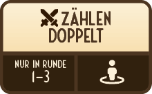
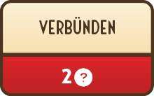
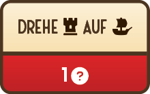

Kapitel 4
Durch die Blockade
Die britische Marine hat die Kapitäne ihrer stärksten Schiffe angewiesen, eine Blockade zu errichten. Sie soll die amerikanischen Flotten davon abhalten, ungehindert in diesen Gewässern zu agieren. Auf der anderen Seite des Golfs beansprucht Cartalena seine Unabhängigkeit von Spanien und öffnet seinen Hafen für die Freibeuter. Um die besten Leute zu rekrutieren und neue Kontakte zu knüpfen, müsst ihr euch euren Weg durch die lauernden britischen Kriegsschiffe bahnen. Die Farbe, mit der ihr soeben noch feierlich den Namen eures Schiffs auf den Rumpf geschrieben habt, ist grade so trocken, als ihr schon Kurs auf Cartalena nehmt.
Szenario 4 – Spielaufbau
Britische Marine
Gegner Nr. 4
startet mit 1 erbeuteten Karte
Crew
Ziel Nr. 3

Kapitän
Ziel Nr. 7
Spielt nun das Szenario. Klickt danach auf den passenden Knopf:
In Cartalena...
Ihr besprecht die nächsten Schritte eurer Missionen mit euren neuen Kapitänen in der hiesigen Taverne. Aus dem Augenwinkel seht ihr, wie Jean Lafayette in einer Ecke des Schrankraumes mit einer streng dreinblickenden Wühlmaus streitet. Nur wenige Augenblicke später verlässt sie aufgebracht die Taverne. Jean schleicht zurück an euren Tisch. „Die Briten planen, bald New L’Oreans anzugreifen …“ flüstert er betrübt. Kein Funken seiner gewohnten Furchtlosigkeit schwingt in seiner Stimme. „Ich würde lügen, wenn ich sagen würde, dass ich mir keine Sorgen machen würde …“
Lest die folgenden beiden Optionen und wählt 1 aus:
Heitert Jean auf, indem ihr ihn eurer Besatzung vorstellt und gemeinsam feiert, dass ihr unbemerkt einen ganzen Haufen Schmuggelware durch die Rattuga Bucht geschmuggelt habt.
Führt Jean auf eurem neuen Schiff herum. Besprecht dabei – ganz unter euch – die Pläne, wie ihr die Verteidigung eurer Festung in der Bucht verbessern könnt.
Feiert euren Erfolg!
Die Gäste in der Taverne brechen in Gesang und Gelächter aus, als Jean eine schillernde Geschichte zu ihrem Ende bringt. Er wendet sich danach direkt an euch: „Ich danke euch, dass ihr mir so einen gebührlichen Piratenempfang bereitet habt. Ich sehe, ihr genießt eure Erfolge …“ Er blickt sich um. Ihr bemerkt zum ersten Mal, dass ihr von einigen verdächtigen Gestalten beobachtet werdet. „Erfolg bringt auch Feinde mit sich“, warnt er euch mit einem eisernen Lächeln. „Und mir scheint es, als hättet ihr schon mehr als genug von ihnen …“ Jean nickt auf seinem Weg nach draußen den Raufbolden in der Schänke höflich zu.
Aktualisiert das Kampagnenlogbuch
Füllt den Kreis bei „Szenario 4“ aus.

Szenario 4 schaltet neues Material für euch frei:
-
Neue Aufkleber
Nehmt euch den zweiten Aufkleber-Bogen, der mit S2 beschriftet ist. Übermalt das Schloss.
-
Neuer Gefahr-Effekt
Es gibt nun eine neue Gefahr, die euch begegnen kann, denn eure Feinde werden euch gegenüber immer misstrauischer. Klebt den Aufkleber E1 auf Feld E des Piratenlogbuchs.
-
Neue Regel
Es gibt eine neue Regel für Gefahren-Effekte: Übermalt das Schloss R3 in der Anleitung unter „Übersicht: Gefahren-Effekte“.
-
Neue Charaktere
Euch stehen 2 neue Charaktere zur Verfügung: SCARLET and DOMINIQUE. Übermalt auf beiden Karten die Schlösser. Ihr dürft ab sofort frei wählen, mit welchen beiden Charakteren ihr spielen wollt.


-
Neue Fähigkeiten
SCARLET and DOMINIQUE erhalten beide je 1 neue Fähigkeit. Wählt jeweils 1 Fähigkeit aus B1 oder B2 und klebt den entsprechenden Aufkleber je auf eines der Felder B des Charakters.
Plant eure Verteidigung
"„Mmhhh. Ja, ihr habt hier wirklich ein beeindruckendes Schiff. Flink, wendig und mit einer fähigen Crew besetzt … Aber was glaubt ihr, könnt ihr gegen die mächtige britische Marine ausrichten? Falls ihr vorhabt, hinter Pierre und mir in den Krieg zu segeln, dann müsst ihr mithalten können. Ihr habt zu viele Matrosen in eurer Festung untergebracht. Es nützt euch nichts, eure Stellung zu halten, wenn ihr die See nicht kontrollieren könnt! Ich habe mehr von euch erwartet, wenn man bedenkt, in welchen hohen Tönen von euch gesprochen wird.“ Jeans Worte hallen – noch lange nachdem er gegangen ist – in euren Ohren nach. "
Aktualisiert das Kampagnenlogbuch
Füllt den Kreis bei „Szenario 4“ aus.
Szenario 4 schaltet neues Material für euch frei:
-
Neue Aufkleber
Nehmt euch den zweiten Aufkleber-Bogen, der mit S2 beschriftet ist. Übermalt das Schloss.
-
Neuer Gefahr-Effekt
Es gibt nun eine neue Gefahr, die euch begegnen kann, denn eure Feinde werden euch gegenüber immer misstrauischer. Klebt den Aufkleber E2 auf Feld E des Piratenlogbuchs.
-
Neue Regel
Es gibt eine neue Regel für Gefahren-Effekte: Übermalt das Schloss R4 in der Anleitung unter „Übersicht: Gefahren-Effekte“.
-
Neue Charaktere
Euch stehen 2 neue Charaktere zur Verfügung: SCARLET and DOMINIQUE. Übermalt auf beiden Karten die Schlösser. Ihr dürft ab sofort frei wählen, mit welchen beiden Charakteren ihr spielen wollt.
-
Neue Fähigkeiten
SCARLET and DOMINIQUE erhalten beide je 1 neue Fähigkeit. Wählt jeweils 1 Fähigkeit aus B1 oder B2 und klebt den entsprechenden Aufkleber je auf eines der Felder B des Charakters.
Wenn ihr soweit seid, setzt euer Abenteuer fort …
Auf ins 5. KapitelÜbersicht
Kampagne
Fähigkeits-Übersicht
Anmerkung: Diese Fähigkeits-Übersicht enthält Fähigkeiten, die du im Laufe der Kampagne freischalten kannst. Lest daher am besten immer nur die Fähigkeiten, die euch zur Verfügung stehen.
Fähigkeiten von Charakteren
|
Bezahle 1 beliebige Ressource, um beliebig viele Ressourcen-Karten, die unter dem Piratenimperium liegen, unter deinem Charakter zu lagern. Einschränkung: Nur der Charakter, der diese Fähigkeit aktiviert, kann die Karten erhalten. |
|

|
Bezahle 1 Münze um +2 zum Gesamtwert der aktuellen Probe dazuzurechnen. Du darfst diese Fähigkeit auch noch nutzen, wenn der Eigenschafts-Modifikator schon aufgedeckt wurde und auch für den anderen Spieler. Einschränkung: Du darfst diese Fähigkeit nur 1x pro Zug nutzen. |

|
Bezahle 1 Schwert um +2 zum Gesamtwert der aktuellen Probe dazuzurechnen. Du darfst diese Fähigkeit auch noch nutzen, wenn der Eigenschafts-Modifikator schon aufgedeckt wurde und auch für den anderen Spieler. Einschränkung: Du darfst diese Fähigkeit nur 1x pro Zug nutzen. |

|
Bezahle 1 beliebige Ressource um +1 zum Gesamtwert der aktuellen Probe dazuzurechnen. Du darfst diese Fähigkeit auch noch nutzen, wenn der Eigenschafts-Modifikator schon aufgedeckt wurde und auch für den anderen Spieler. Einschränkung: Du darfst diese Fähigkeit nur 2x pro Zug nutzen. |

|
Jede Münze, die du besitzt, kann wie ein Juwel bezahlt werden. Einschränkung: Du darfst diese Fähigkeit nur in Runde 1 und 2 nutzen und nur der Character, der die Fähigkeit hat, darf ihren Effekt nutzen. |

|
Du besitzt 1 dauerhaftes Fass. Einschränkung: Du darfst diese Fähigkeit nur in Runde 1 und 2 nutzen und nur der Character, der die Fähigkeit hat, darf ihren Effekt nutzen. |
|  |
Jedes Schwert, das du besitzt, gilt als 2 Schwerter. Einschränkung: Du darfst diese Fähigkeit nur in Runde 1 - 3 nutzen und nur der Character, der die Fähigkeit hat, darf ihren Effekt nutzen. |

|
Bezahle 1 Fass, um „verflucht“ bei der aktuellen Probe zu ignorieren. Du darfst diese Fähigkeit auch für den anderen Spieler nutzen. |
|  |
Bezahlt 2 beliebige Ressourcen, um zu einem beliebigen Zeitpunkt sofort den aktiven Spieler zu wechseln. Der andere Spieler übernimmt den aktuellen Zug und bringt ihn normal zu Ende. Nach dem Zug wechselt ihr wieder wie gewohnt. |
|  |
Bezahle 1 beliebige Ressource, um euer Piratenimperium von FESTUNG auf FLOTTE zu drehen. |

|
Lagere beliebig viele Ressourcen-Karten, die unter dem Piratenimperium liegen, unter deinem Charakter. Einschränkung: Darf nur genutzt werden, wenn euer Piratenimperium die FLOTTE zeigt. Nur der Charakter, der diese Fähigkeit aktiviert, kann die Karten erhalten. |
Fähigkeiten des Piratenimperiums

|
Bezahle 1 Kanone um +2 zum Gesamtwert der aktuellen Probe dazuzurechnen. Du darfst diese Fähigkeit auch noch nutzen, wenn der Eigenschafts-Modifikator schon aufgedeckt wurde und auch für den anderen Spieler. |

|
Bezahle 1 Juwel, um euer Piratenimperium von FESTUNG auf FLOTTE Flotte zu drehen. |

|
Bezahle 1 Kanone, um eine Gefahr im aktuellen Zug zu ignorieren. Im nächsten Zug wird diese allerdings wieder wie gewohnt überprüft. |